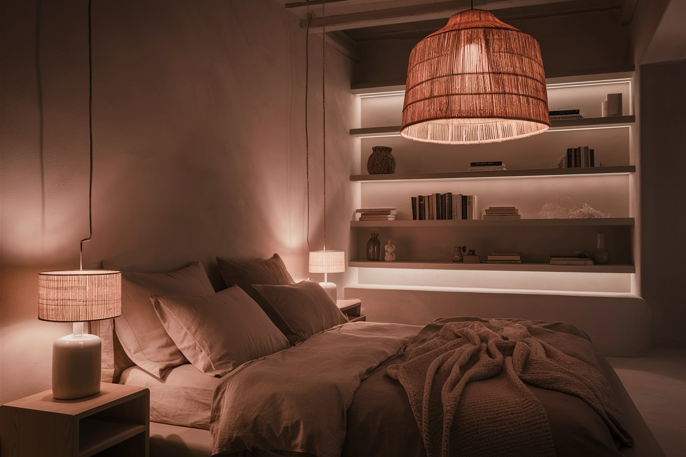
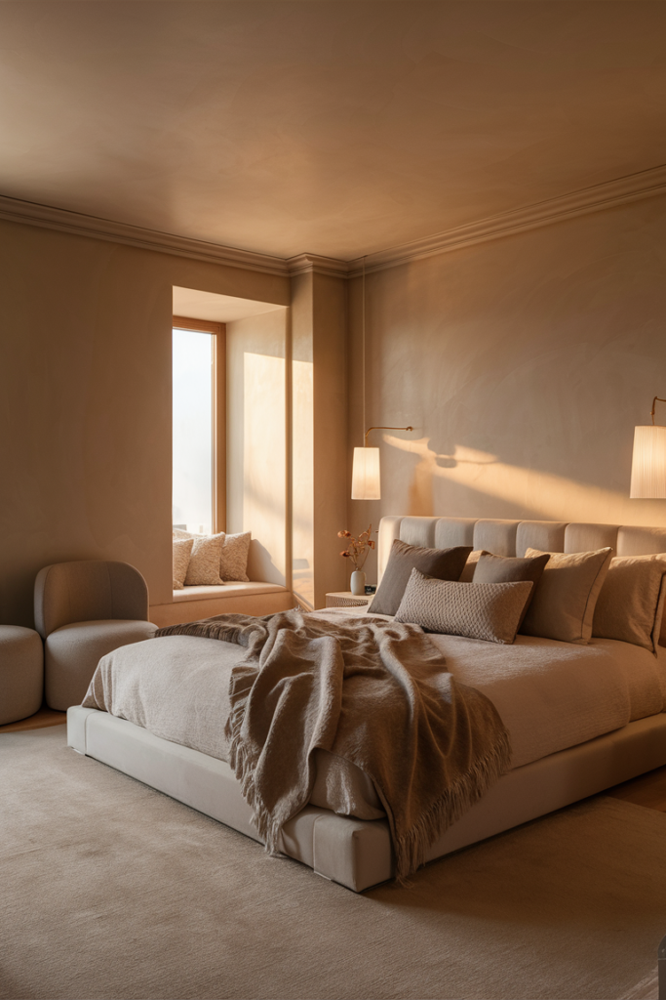
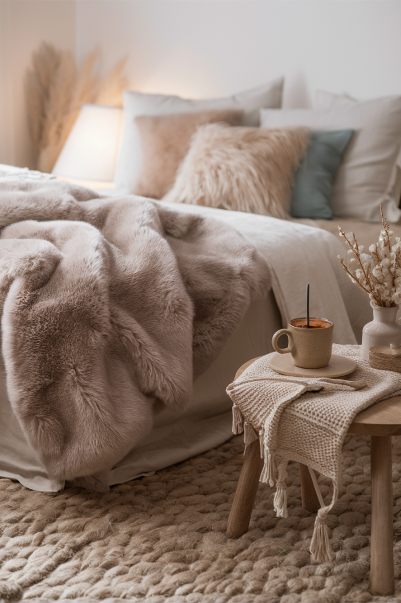
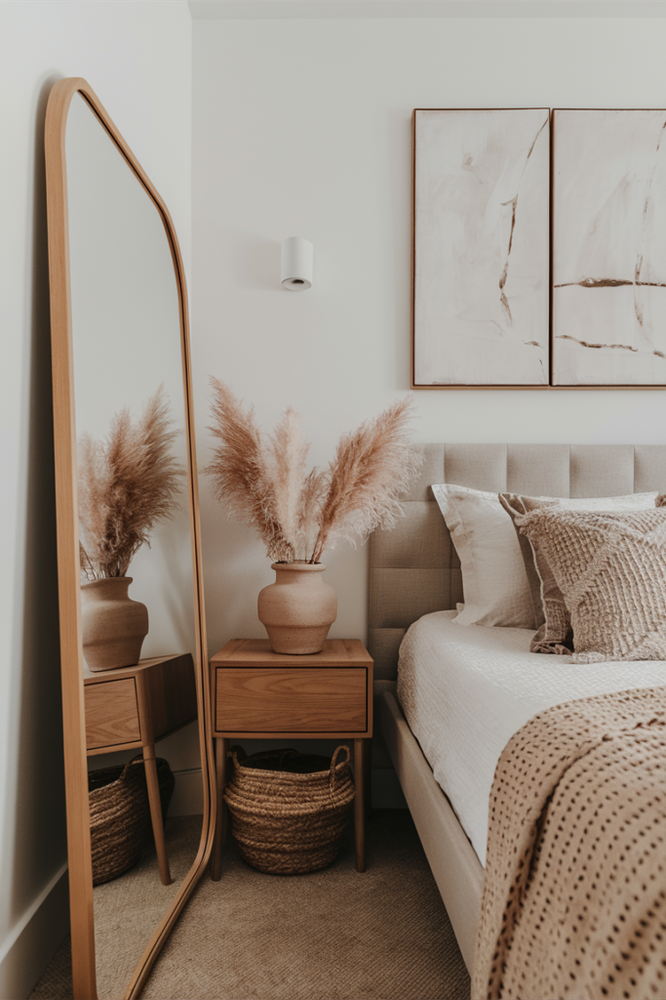
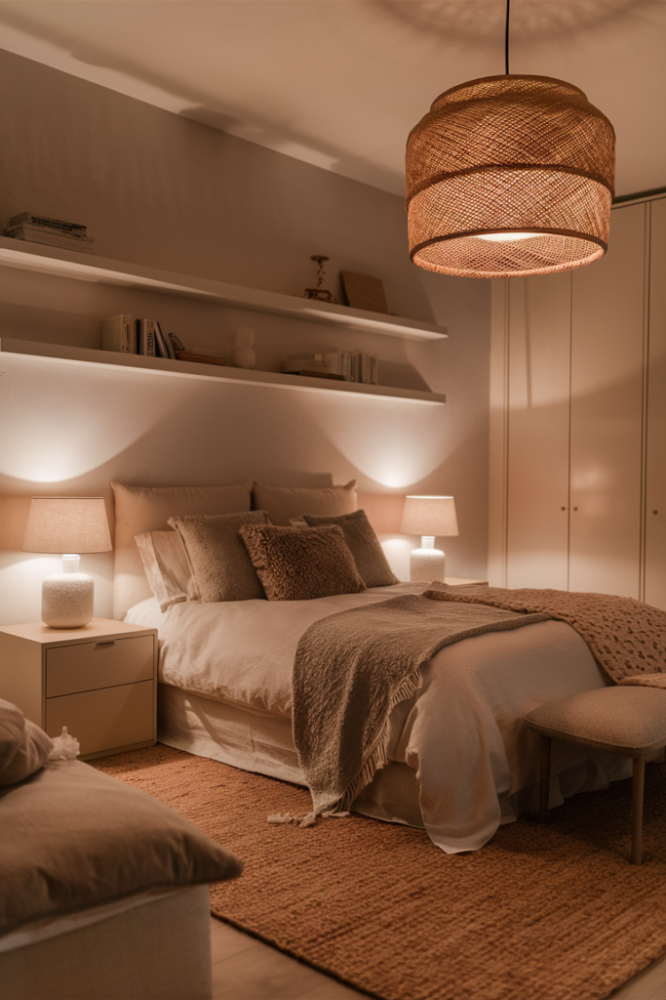
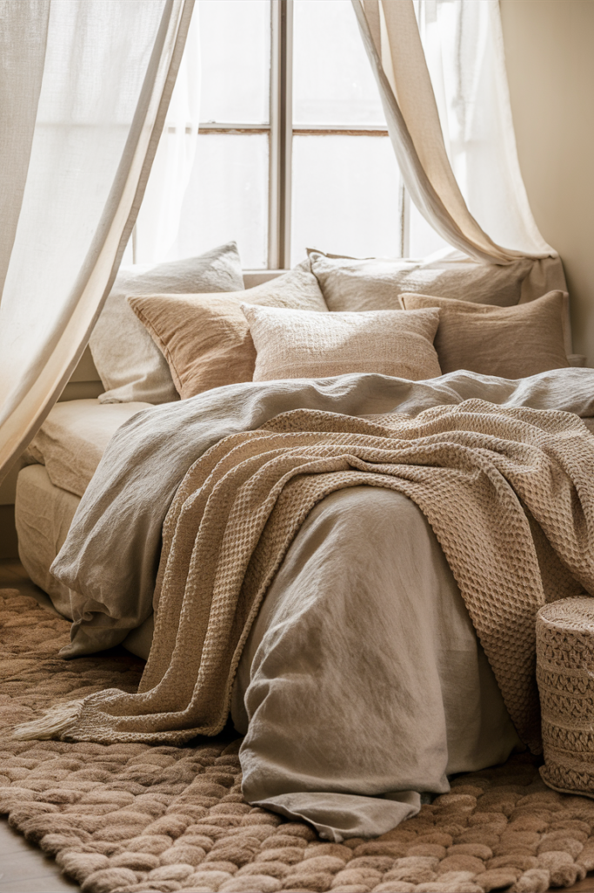
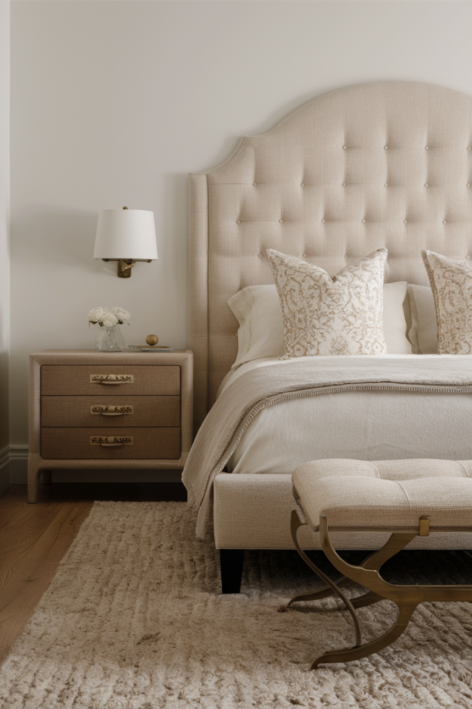
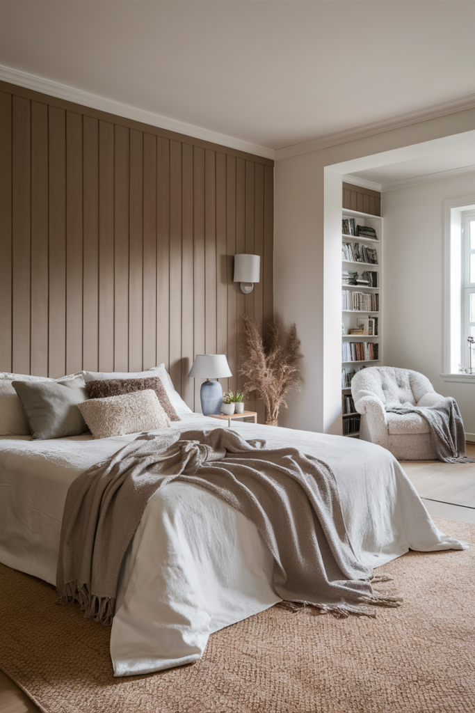
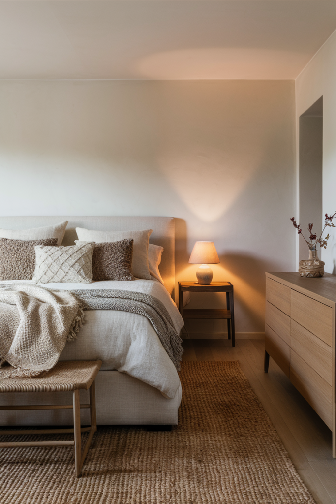
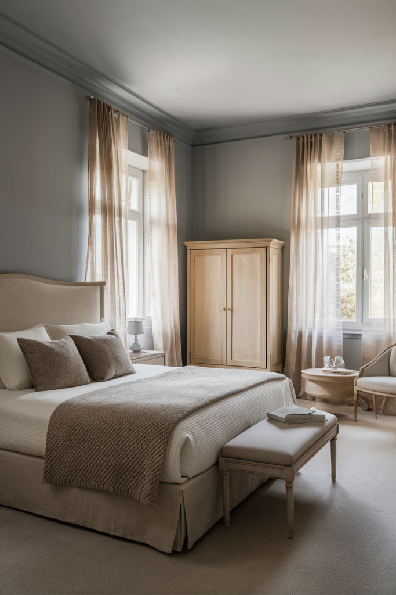

A neutral bedroom works so well because it gives the eye somewhere to actually rest. Soft whites, warm beiges and quiet grays create a genuinely calming backdrop, and once texture and warm lighting get layered in, the whole room starts to feel considered rather than plain.
Neutral doesn't mean lifeless, either, it means the whole room can shift naturally with the seasons, the furniture, and whatever personal touches get added over time, without ever needing a full repaint to stay feeling current.


Making It Seasonal
One of the best things about a neutral bedroom is how easily it shifts with the seasons without requiring a full redecorate. Pastel pillows and a fresh plant bring in spring, while breezy throws and a rattan basket or two suit summer.
Fall calls for chunky knits and warm-toned accent pillows in terracotta or ochre, and winter leans into faux fur, flannel bedding, and a bit of candlelight. Keeping a small box of seasonal swaps on hand makes the whole process low-effort for a surprisingly high payoff over time.

Styling Without Cluttering
Once the larger pieces are in place, a handful of accessories finishes the room without crowding it. Artwork in neutral tones, an abstract print or a calming photograph, suits the palette well, and a mirror makes even a small bedroom feel larger and brighter.
A ceramic vase adds height and visual interest on a dresser or nightstand, and a bit of greenery or dried florals brings in a touch of life. Keeping accessories minimal but intentional matters more than quantity, a few well-placed pieces read as styled, where too many start to look cluttered.

Getting the Lighting Right
Lighting might matter more than any single decor choice in a neutral bedroom. A cold, overly blue light works directly against the calm the rest of the room is building, so warm, soft, and layered lighting is worth prioritizing.
A dimmable overhead light makes a bigger difference than it sounds like it would, bedside lamps with a soft, focused glow suit nighttime reading, and a floor lamp adds warmth to a darker corner that overhead lighting alone can't reach. String lights are an easy, low-cost way to add a bit of extra glow for anyone who wants it.

Bedding and Textiles That Make the Room
Bedding does more work than almost anything else in a neutral bedroom, which makes it worth genuine investment. Layered linen sheets under a cotton duvet strike a breathable, soft balance, and mixing pillow textures, velvet, knit, woven, adds variety without introducing any new color.
An oversized throw blanket draped casually at the foot of the bed finishes the layered look, and curtains in cotton or linen let in soft, diffused daylight rather than blocking it outright. Swapping a few textile pieces seasonally is an easy way to keep the room feeling current without a full redecorate.

Furniture That Works With the Palette
Furniture for a neutral bedroom doesn't need to be expensive or designer-sourced, it just needs to lean warm, simple, and timeless rather than bulky or dramatic. An upholstered headboard in cream or gray instantly elevates a bed frame, while nightstands in wood or matte metal keep the look grounded rather than glossy.
A dresser in neutral wood with clean lines rounds out the main pieces, and a linen-covered bench or a rattan accent chair adds both comfort and a bit of texture. Keeping everything relatively low-key protects the calm feeling the rest of the room is working to build.

Wall Ideas Worth Trying
A neutral wall doesn't have to mean a flat, forgettable one. Textured paint adds subtle depth without introducing any color, wallpaper in a soft floral, thin stripe, or abstract neutral pattern brings a bit more personality, and wood paneling or wainscoting adds a sense of quality without pulling focus from the rest of the room.
An accent wall in a slightly darker taupe or greige creates gentle contrast against the rest of the palette, even just one wall painted a shade deeper than the others can make a whole room feel more deliberately designed.

Texture Is the Real Secret
Relying on one shade of beige across every surface tends to flatten a room rather than elevate it, texture is what actually makes a neutral palette feel layered and intentional. Cotton or linen bedding keeps things breathable, a chunky knit throw adds a cozy visual weight, and woven baskets or a jute rug bring in a bit of rustic texture underfoot.
Soft curtains that filter light rather than block it completely round out the layering. None of it requires bold patterns or loud color, the texture alone does the work of keeping the room visually interesting.

Choosing the Right Neutral Palette
Each neutral carries its own mood. White reads clean and crisp, beige brings genuine warmth, taupe feels elegant and grounded, and gray leans modern and a little moody. Warm whites and taupes tend to keep a room feeling soft rather than sterile, which matters more than most people expect when picking a base color.
The 60-30-10 rule is a reliable way to balance everything: roughly 60% of the room in a main color like soft white or beige on the walls, 30% in a secondary tone like taupe or light gray through furniture and bedding, and the remaining 10% in an accent, a bit of blush, olive green, or bronze worked into pillows or art.

Final Thoughts
A neutral bedroom isn't really about playing it safe at all, it's about building a space that actually feels genuinely calm to spend time in. Soft tones, mixed textures, and warm lighting together create something that reads as classic rather than boring.
Whatever style ends up layered on top later, modern, rustic, boho, minimal, a neutral base gives it room to genuinely work without ever clashing or going out of style by next season.